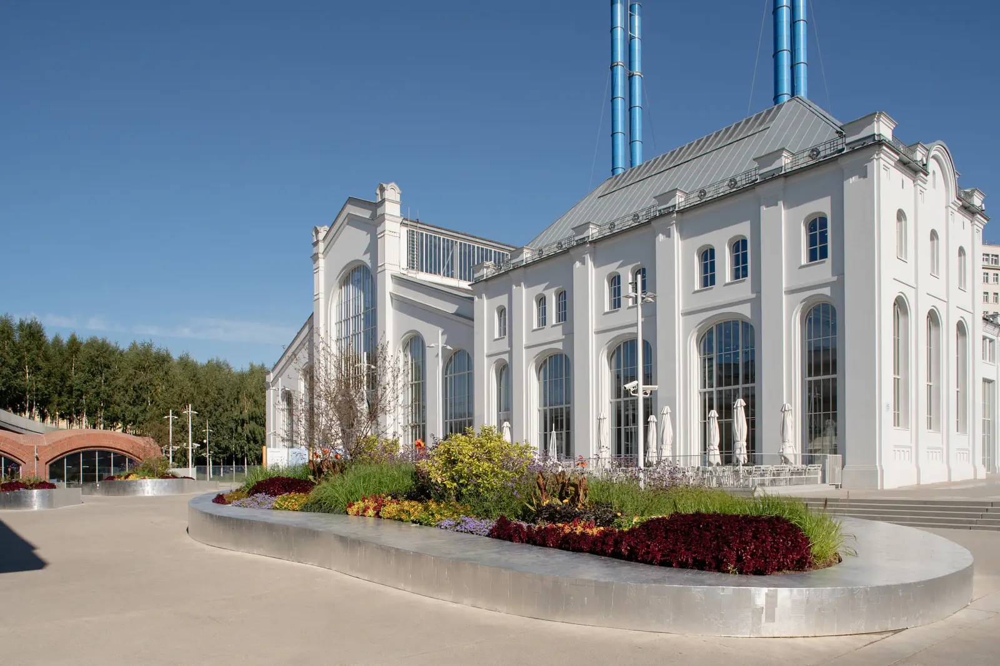
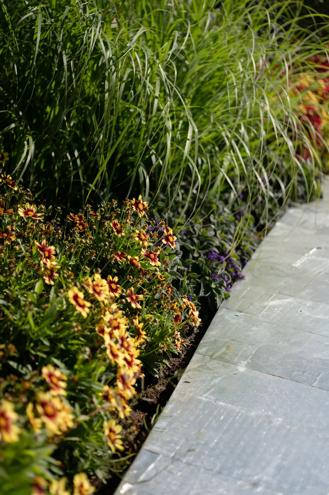
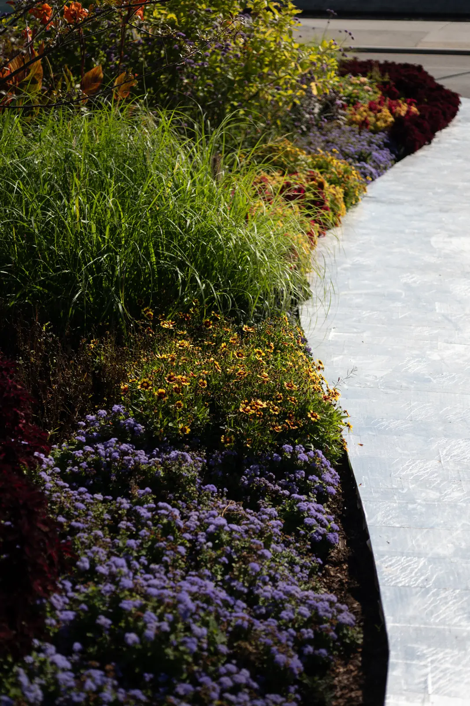
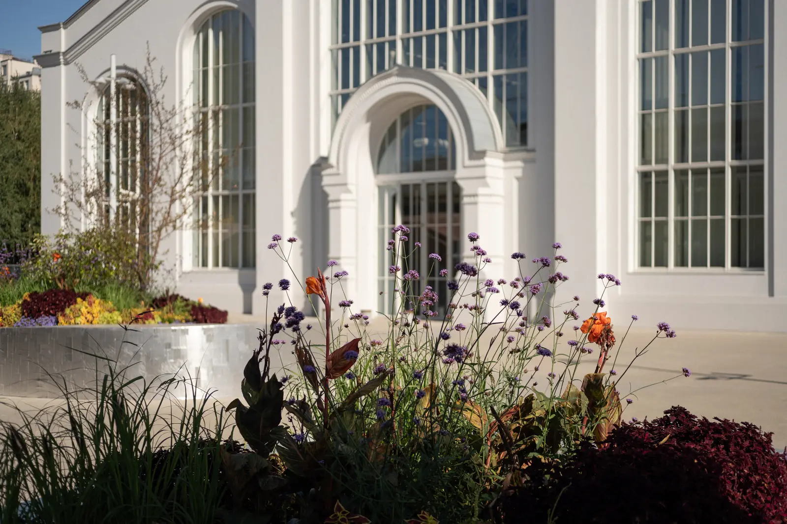
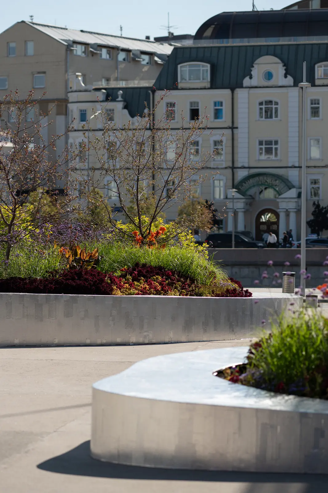
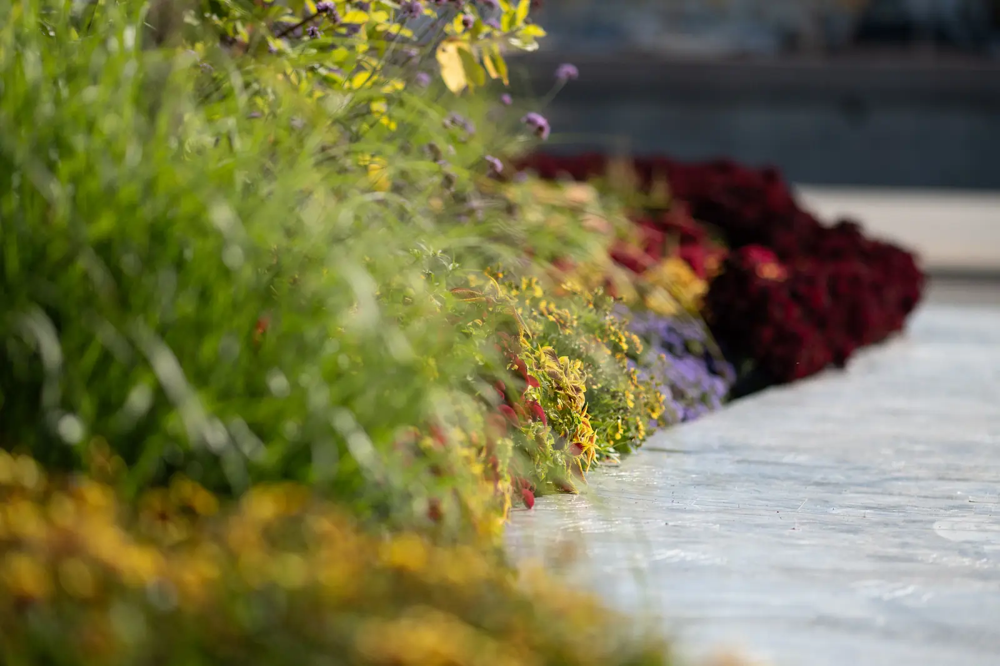
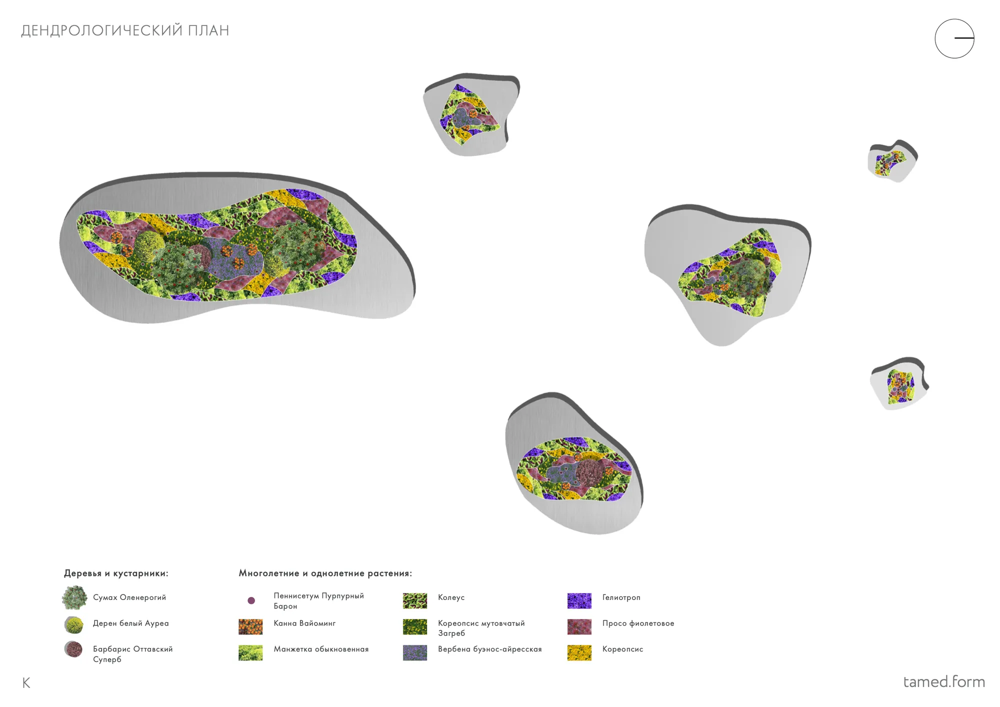
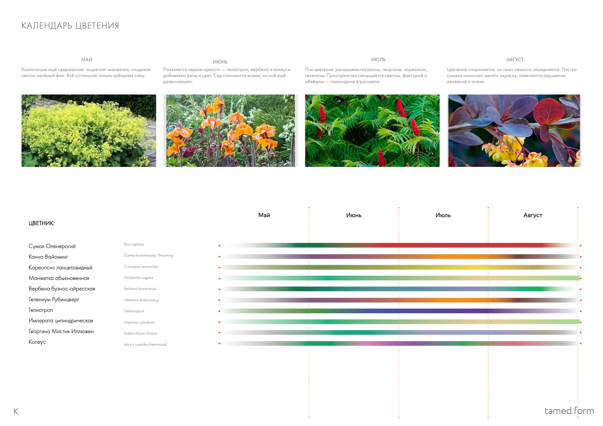

палисадник 2025
Тропический оазис на площади у «ГЭС-2», посвящённый наследию бразильского архитектора Лины Бо Барди и её выставке «Если бы стены стали водой». Мы будто раскрываем окно из Москвы в Сан-Паулу.
Формы цветников повторяют знаменитые «пещерные отверстия» центра Sesc Pompéia. От северного фрагмента рощи композиция уходит в цветную, почти тропическую волну.
Растения подобраны так, чтобы пик красоты наступал постепенно: от светлого фона манжетки в мае до канн, георгин и гелениума в июле.





чертежи и схемы

